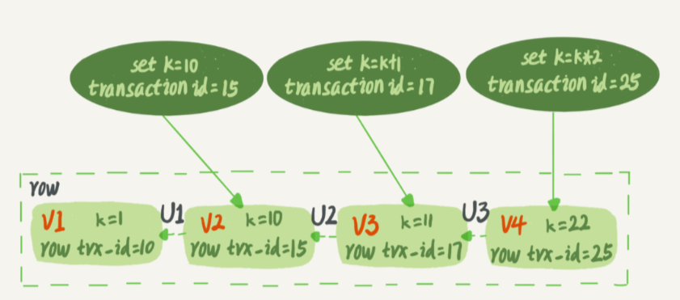
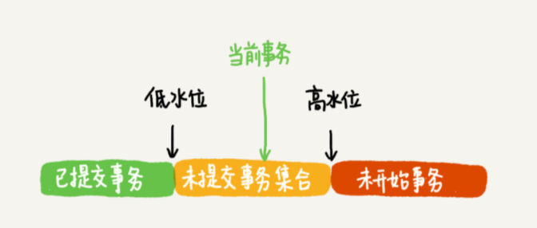
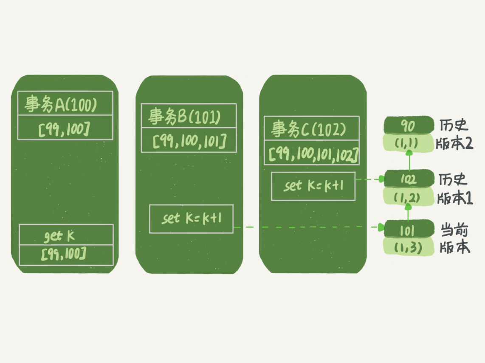
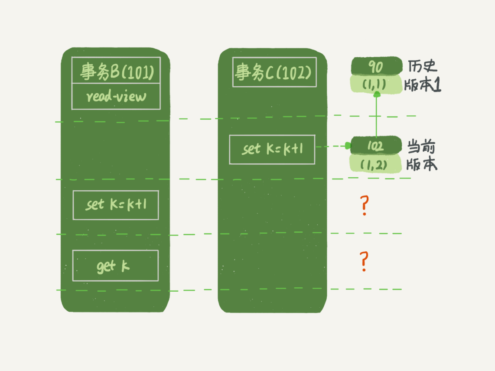
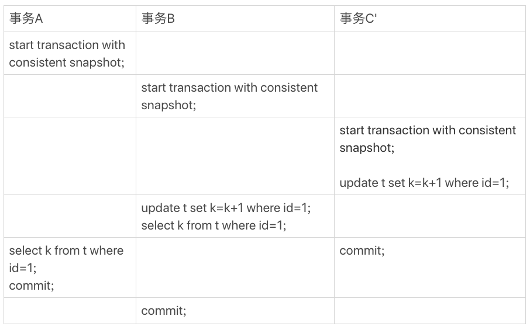
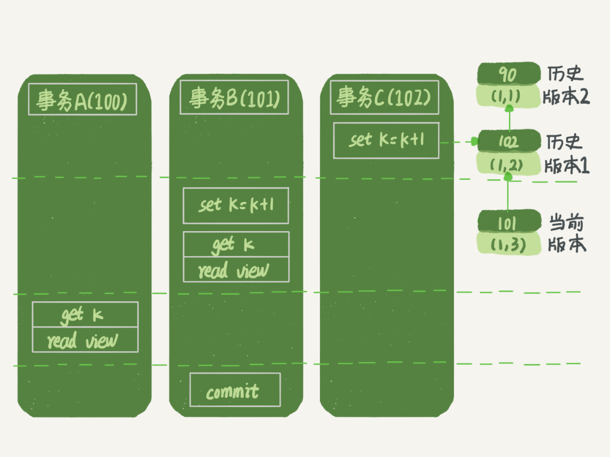
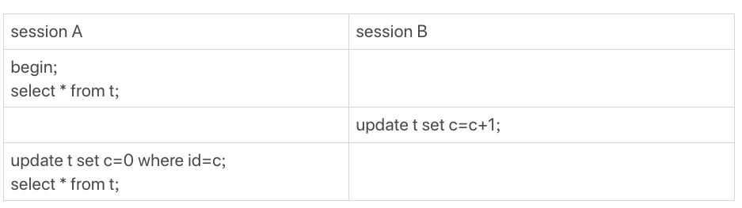
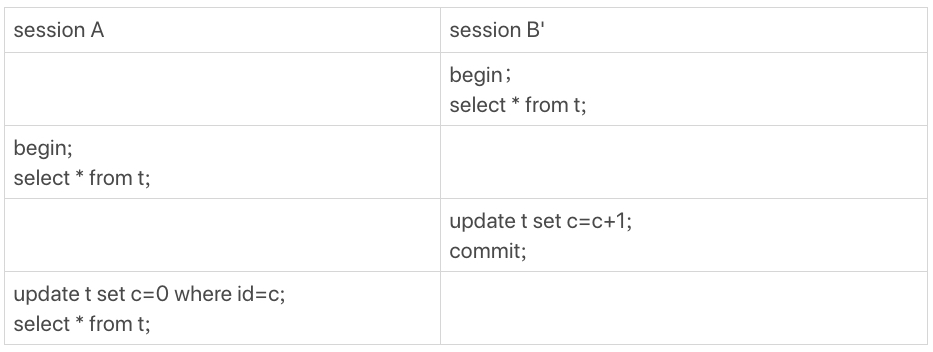

08、事务到底是隔离的还是不隔离的
如果是可重复读隔离级别，事务T启动的时候会创建一个视图read-view，之后事务T执行期间，即使有其他事务修改了数据，事务T看到的仍然跟在启动时看到的一样。也就是说，一个在可重复读隔离级别下执行的事务，好像与世无争，不受外界影响。
但是，我在上一篇文章中，和你分享行锁的时候又提到，一个事务要更新一行，如果刚好有另外一个事务拥有这一行的行锁，它又不能这么超然了，会被锁住，进入等待状态。问题是，既然进入了等待状态，那么等到这个事务自己获取到行锁要更新数据的时候，它读到的值又是什么呢？
我给你举一个例子吧。下面是一个只有两行的表的初始化语句。
1 | CREATE TABLE `t` ( |
begin/start transaction 命令并不是一个事务的起点，在执行到它们之后的第一个操作InnoDB表的语句（第一个快照读语句），事务才真正启动。如果你想要马上启动一个事务，可以使用 start transaction with consistent snapshot 这个命令。如果没有特别说明，都是默认autocommit=1。
在这个例子中，事务C没有显式地使用 begin/commit，表示这个update语句本身就是一个事务，语句完成的时候会自动提交。事务B在更新了行之后查询; 事务A在一个只读事务中查询，并且时间顺序上是在事务B的查询之后。
事务B查到的k的值是 3
事务A查到的k的值是 1
在MySQL里，有两个“视图”的概念：
- 一个是view。是一个用查询语句定义的虚拟表，在调用的时候执行查询语句并生成结果。创建视图的语法是 create view … ，而它的查询方法与表一样。
- 另一个是InnoDB在实现MVCC时用到的一致性读视图，即 consistent read view，用于支持 RC（Read Committed，读提交）和RR（Repeatable Read，可重复读）隔离级别的实现。它没有物理结构，作用是事务执行期间用来定义“我能看到什么数据”。
快照”在MVCC里是怎么工作的？
在可重复读隔离级别下，事务在启动的时候就“拍了个快照”。注意，这个快照是基于整库的。
这时，你会说这看上去不太现实啊。如果一个库有100G，那么我启动一个事务，MySQL就要拷贝100G的数据出来，这个过程得多慢啊。可是，我平时的事务执行起来很快啊。实际上，我们并不需要拷贝出这100G的数据。
这个快照是怎么实现的？
InnoDB 里面每个事务有一个唯一的事务ID，叫作 transaction id。它是在事务开始的时候向InnoDB的事务系统申请的，是按申请顺序严格递增的。
每行数据也都是有多个版本的。每次事务更新数据的时候，都会生成一个新的数据版本，并且把 transaction id 赋值给这个数据版本的事务ID，记为 row trx_id。同时，旧的数据版本要保留，并且在新的数据版本中，能够有信息可以直接拿到它。也就是说，数据表中的一行记录，其实可能有多个版本(row)，每个版本有自己的row trx_id。
如图2所示，就是一个记录被多个事务连续更新后的状态。
语句更新会生成 undo log（回滚日志）吗？
那么，undo log在哪呢？
实际上，图2中的三个虚线箭头，就是undo log；而V1、V2、V3并不是物理上真实存在的，而是每次需要的时候根据当前版本和undo log计算出来的。比如，需要V2的时候，就是通过V4依次执行U3、U2算出来。
InnoDB是怎么定义那个“100G”的快照的？
按照可重复读的定义，一个事务启动的时候，能够看到所有已经提交的事务结果。但是之后，这个事务执行期间，其他事务的更新对它不可见。
因此，一个事务只需要在启动的时候声明说，“以我启动的时刻为准，如果一个数据版本是在我启动之前生成的，就认；如果是我启动以后才生成的，我就不认，我必须要找到它的上一个版本”。当然，如果“上一个版本”也不可见，那就得继续往前找。还有，如果是这个事务自己更新的数据，它自己还是要认的。
在实现上， InnoDB为每个事务构造了一个数组，用来保存这个事务启动瞬间，当前正在“活跃”的所有事务ID。“活跃”指的就是，启动了但还没提交。
数组里面事务ID的最小值记为低水位，当前系统里面已经创建过的事务ID的最大值加1记为高水位。这个视图数组和高水位，就组成了当前事务的一致性视图（read-view）。而数据版本的可见性规则，就是基于数据的row trx_id和这个一致性视图的对比结果得到的。
这个视图数组把所有的row trx_id 分成了几种不同的情况。
这样，对于当前事务的启动瞬间来说，一个数据版本的 row trx_id，有以下几种可能：
如果落在绿色部分，表示这个版本是已提交的事务或者是当前事务自己生成的，这个数据是可见的；
如果落在红色部分，表示这个版本是由将来启动的事务生成的，是肯定不可见的；
如果落在黄色部分，那就包括两种情况
- 若
row trx_id在数组中，表示这个版本是由还没提交的事务生成的，不可见； - 若
row trx_id不在数组中，表示这个版本是已经提交了的事务生成的，可见。
- 若
比如，对于图2中的数据来说，如果有一个事务，它的低水位是18，那么当它访问这一行数据时，就会从V4通过U3计算出V3，所以在它看来，这一行的值是11。
你看，有了这个声明后，系统里面随后发生的更新，是不是就跟这个事务看到的内容无关了呢？因为之后的更新，生成的版本一定属于上面的2或者3(1)的情况，而对它来说，这些新的数据版本是不存在的，所以这个事务的快照，就是“静态”的了。
所以你现在知道了，InnoDB利用了“所有数据都有多个版本”的这个特性，实现了“秒级创建快照”的能力。
事务A的语句返回的结果，为什么是k=1。不妨做如下假设：
- 事务A开始前，系统里面只有一个活跃事务ID是99；
- 事务A、B、C的版本号分别是100、101、102，且当前系统里只有这四个事务；
- 三个事务开始前，(1,1）这一行数据的row trx_id是90。
这样，事务A的视图数组就是[99,100], 事务B的视图数组是[99,100,101], 事务C的视图数组是[99,100,101,102]。
为了简化分析，我先把其他干扰语句去掉，只画出跟事务A查询逻辑有关的操作：
第一个有效更新是事务C，把数据从(1,1)改成了(1,2)。这时候，这个数据的最新版本的
row trx_id是102，而90这个版本已经成为了历史版本。第二个有效更新是事务B，把数据从(1,2)改成了(1,3)。这时候，这个数据的最新版本的
row trx_id是101，而102又成为了历史版本。在事务A查询的时候，其实事务B还没有提交，但是它生成的(1,3)这个版本已经变成当前版本了。但这个版本对事务A必须是不可见的，否则就变成脏读了。事务A要来读数据了，它的视图数组是[99,100]。当然了，读数据都是从当前版本读起的。所以，事务A查询语句的读数据流程是这样的：
- 找到(1,3)的时候，判断出row trx_id=101，比高水位大，处于红色区域，不可见；
- 接着，找到上一个历史版本，一看row trx_id=102，比高水位大，处于红色区域，不可见；
- 再往前找，终于找到了（1,1)，它的row trx_id=90，比低水位小，处于绿色区域，可见。
这样执行下来，虽然期间这一行数据被修改过，但是事务A不论在什么时候查询，看到这行数据的结果都是一致的，所以我们称之为一致性读。
一个数据版本，对于一个事务视图来说，除了自己的更新总是可见以外，有三种情况：
- 版本未提交，不可见；
- 版本已提交，但是是在视图创建后提交的，不可见；
- 版本已提交，而且是在视图创建前提交的，可见。
事务A的查询语句的视图数组是在事务A启动的时候生成的，这时候：
- (1,3)还没提交，属于情况1，不可见；
- (1,2)虽然提交了，但是是在视图数组创建之后提交的，属于情况2，不可见；
- (1,1)是在视图数组创建之前提交的，可见。
你看，去掉数字对比后，只用时间先后顺序来判断，分析起来是不是轻松多了。所以，后面我们就都用这个规则来分析。
更新逻辑
事务B的update语句，如果按照一致性读，好像结果不对哦？
事务B的视图数组是先生成的，之后事务C才提交，不是应该看不见(1,2)吗，怎么能算出(1,3)来？
如果事务B在更新之前查询一次数据，这个查询返回的k的值确实是1。
但是，当它要去更新数据的时候，就不能再在历史版本上更新了，否则事务C的更新就丢失了。因此，事务B此时的set k=k+1是在（1,2）的基础上进行的操作。所以，这里就用到了这样一条规则：更新数据都是先读后写的，而这个读，只能读当前的值，称为“当前读”（current read）。
因此，在更新的时候，当前读拿到的数据是(1,2)，更新后生成了新版本的数据(1,3)，这个新版本的row trx_id是101。所以，在执行事务B查询语句的时候，一看自己的版本号是101，最新数据的版本号也是101，是自己的更新，可以直接使用，所以查询得到的k的值是3。
这里我们提到了一个概念，叫作 当前读。其实，除了update语句外，select语句如果加锁，也是当前读。
如果把事务A的查询语句 select * from t where id=1 修改一下，加上 lock in share mode 或 for update，也都可以读到版本号是101的数据，返回的k的值是3。
下面这两个select语句，就是分别加了 读锁（S锁，共享锁）和 写锁（X锁，排他锁）
1 | mysql> select k from t where id=1 lock in share mode; |
再往前一步，假设事务C不是马上提交的，而是变成了下面的事务C’，会怎么样呢？
事务C’的不同是，更新后并没有马上提交，在它提交前，事务B的更新语句先发起了。前面说过了，虽然事务C’还没提交，但是(1,2)这个版本也已经生成了，并且是当前的最新版本。那么，事务B的更新语句会怎么处理呢？
“两阶段锁协议”就要上场了。事务C’没提交，也就是说(1,2)这个版本上的写锁还没释放。而事务B是当前读，必须要读最新版本，而且必须加锁，因此就被锁住了，必须等到事务C’释放这个锁，才能继续它的当前读。
到这里，我们把一致性读、当前读和行锁就串起来了。
事务的可重复读的能力是怎么实现的？
可重复读的核心就是一致性读（consistent read） ，而事务更新数据的时候，只能用当前读。如果当前的记录的行锁被其他事务占用的话，就需要进入锁等待。
而读提交的逻辑和可重复读的逻辑类似，它们最主要的区别是：
- 在可重复读隔离级别下，只需要在事务开始的时候创建一致性视图，之后事务里的其他查询都共用这个一致性视图；
- 在读提交隔离级别下，每一个语句执行前都会重新算出一个新的视图。
在读提交隔离级别下，事务A和事务B的查询语句查到的k，分别应该是多少呢？
这里需要说明一下，“start transaction with consistent snapshot; ”的意思是从这个语句开始，创建一个持续整个事务的一致性快照。所以，在读提交隔离级别下，这个用法就没意义了，等效于普通的start transaction。
下面是读提交时的状态图，可以看到这两个查询语句的创建视图数组的时机发生了变化，就是图中的read view框。（注意：这里，我们用的还是事务C的逻辑直接提交，而不是事务C’）
事务A的查询语句的视图数组是在执行这个语句的时候创建的，时序上(1,2)、(1,3)的生成时间都在创建这个视图数组的时刻之前。但是，在这个时刻：
- (1,3)还没提交，属于情况1，不可见；
- (1,2)提交了，属于情况3，可见。
所以，这时候事务A查询语句返回的是k=2。显然地，事务B查询结果k=3。
小结
InnoDB的行数据有多个版本，每个数据版本有自己的 row trx_id，每个事务或者语句有自己的一致性视图。
普通查询语句是一致性读，一致性读会根据row trx_id和一致性视图确定数据版本的可见性。
- 对于可重复读，查询只承认在事务启动前就已经提交完成的数据；
- 对于读提交，查询只承认在语句启动前就已经提交完成的数据；
而当前读，总是读取已经提交完成的最新版本。
你也可以想一下，为什么表结构不支持“可重复读”？
这是因为表结构没有对应的行数据，也没有row trx_id，因此只能遵循当前读的逻辑。
当然，MySQL 8.0已经可以把表结构放在InnoDB字典里了，也许以后会支持表结构的可重复读。
思考题
用下面的表结构和初始化语句作为试验环境，事务隔离级别是可重复读。
现在，我要把所有“字段c和id值相等的行”的c值清零，但是却发现了一个“诡异”的、改不掉的情况。请你构造出这种情况，并说明其原理。
1 | CREATE TABLE `t` ( |

复现出来以后，请你再思考一下，在实际的业务开发中有没有可能碰到这种情况？
你的应用代码会不会掉进这个“坑”里，你又是怎么解决的呢？
答案：
这样，session A看到的就是我截图的效果了。
其实，还有另外一种场景
这个操作序列跑出来，session A看的内容也是能够复现我截图的效果的。这个session B’启动的事务比A要早，其实是上期我们描述事务版本的可见性规则时留的彩蛋，因为规则里还有一个“活跃事务的判断”，我是准备留到这里再补充的。
用新的方式来分析session B’的更新为什么对session A不可见就是：在session A视图数组创建的瞬间，session B’是活跃的，属于“版本未提交，不可见”这种情况。